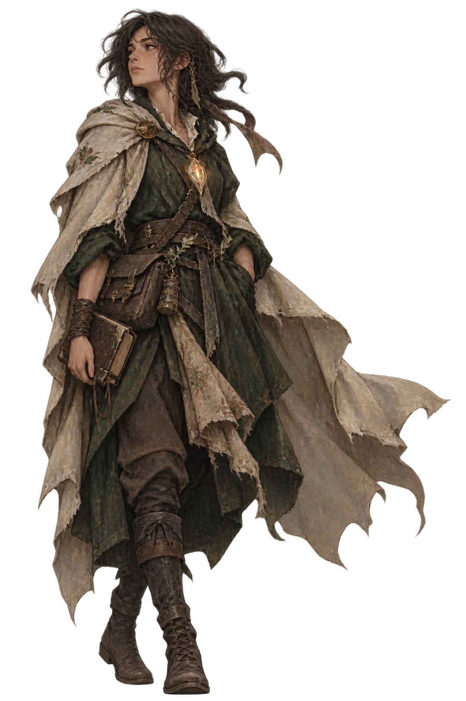

CADERNO DE CAMPO · Nº 001
Todo caminho
deixa marcas.
Uma vida medida não apenas por vitórias, mas por tudo o que se escolheu carregar.
O tipo é mostrado pelo ID do Core: a ilustração desta página não substitui a arte oficial do animal.
CANTEIROS REGISTRADOS
Plantio, rega e colheita permanecem no jogo. As porcentagens são parte da demonstração, não uma contagem ativa.
IMÓVEIS EM SEU NOME
O valor acumulado e a condição de resgate são apenas uma fotografia dos dados. Não há botão de recebimento neste portal.
Baú da residênciaSomente consulta
Sem transferência de objetos por esta página. Acesso e conteúdo dependem das regras do Crownicles.

Cristal de ametista
Material · 3 unidades registradas
UMA SÓ DIREÇÃO · SEM TEMAS PARALELOS
O mesmo mundo, múltiplas leituras.
Laboratório de leitura e composição em cinco superfícies. Dados inventados para demonstração; nenhuma operação consulta ou altera o RPG. As imagens não pretendem representar objetos, cidades ou animais específicos do jogador.
Verificar estados de ausência e restrição · laboratório
Altera somente exemplos de companheiro, jardim e patrimônio. Não consulta o servidor.